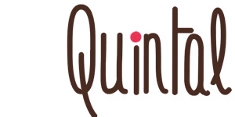
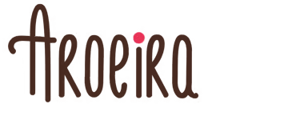
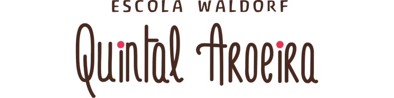
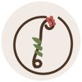
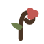

Proteger o tempo da infância.
O manual vivo da identidade da Escola Waldorf Quintal Aroeira. Tudo o que a marca diz antes de qualquer palavra — terra, fruto, gesto de mão e ritmo orgânico.
A escola é uma extensão do quintal de casa
Ideia central: aqui a infância não é apressada. A criança aprende no ritmo do próprio corpo — mãos na terra, pão que cresce, aquarela que se espalha no papel úmido.
Propósito
Proteger o tempo da infância num mundo que quer acelerá-la. Oferecer um lugar onde crescer tem estações, e cada estação é honrada.
Transformação
A família chega buscando “uma escola”. Encontra uma comunidade que devolve à criança o direito de ser criança — e aos pais, a confiança de que isso basta.
Manifesto
Não medimos a infância em provas. Medimos em raízes. Enquanto o mundo cobra pressa, nós protegemos o tempo — porque o que cresce devagar, cresce inteiro.
Princípios de marca
Ritmo antes de pressa
Cada peça respira. Espaço em branco, cadência calma, nada gritado. A forma comunica o ritmo que defendemos.
Feito por mãos
Aquarela, traço, textura de papel. Tudo carrega marca de mão — nunca o brilho frio do sintético.
Natureza como sala de aula
Terra, planta, luz de fim de tarde. A aroeira não é enfeite: é a própria pedagogia virando imagem.
Calor sem ingenuidade
Acolhedor, mas sério. Antroposofia tem profundidade — a marca é quente e confiável, nunca infantilizada.
Quatro pilares
| Pilar | Quintal Aroeira |
|---|---|
| Para quem | Famílias de Bertioga e região que querem uma infância protegida — que recusam a escola-fábrica e procuram sentido, natureza e comunidade. |
| O que transforma | A pressa de “sair na frente” vira confiança no tempo certo de cada criança. |
| Como transforma | Pedagogia Waldorf: livre brincar, ritmo, arte, natureza, ausência de competição e prova tradicional. |
| Prova | Crianças que florescem; famílias que viram comunidade; depoimentos reais de acolhimento e pertencimento. |
Categoria
Educação Infantil (Maternal e Jardim) e Fundamental I (até o 5º ano), pedagogia Waldorf, com oficinas de yoga, capoeira, circo, música, inglês e teatro.
Diferenciação
Não é “escola alternativa colorida”. É terrosa, orgânica, séria na antroposofia — a marca parece o que a pedagogia promete.
A marca É
- Terrosa, manual, calma
- Acolhedora e adulta ao mesmo tempo
- Conectada à natureza e ao tempo
- Narrativa, poética, verdadeira
A marca NÃO é
- Corporativa, fria, “SaaS”
- Creche neon / primárias saturadas
- Apressada, gritada, promocional
- Genérica ou com cara de IA
Anti-posicionamento: evitar a estética de escola bilíngue-tech, de franquia de educação, e de qualquer comunicação que trate criança como cliente a ser convertido.
O nome tem raiz
O wordmark manuscrito é intocável — estrutura e cor permanecem exatamente como são. O que somamos: um símbolo próprio, nascido das bagas de aroeira que já viviam sobre os “i”.


Duas versões oficiais do logo
Assinaturas completas (lockups horizontal/vertical, claro/escuro/mono/sobre-baga, área de proteção, tamanho mínimo e usos proibidos) na folha dedicada → 03-assinaturas.html.
Caixas cromáticas governadas
Terra do logo + paleta viva de Goethe
A base marrom + rosa do logo é lei. Ao redor, uma paleta da natureza e do círculo cromático de Goethe — referência da própria pedagogia Waldorf.
#4A3525Texto · 60% da peça#8B6F58Secundária · bordas#C25953CTA · links · 10%#9E3F3APressed · alerta#E3A9A0Wash · hover#FAF7F2Fundo principal#F2EBE5Cards#E7DCD0Bordas#2E2118Dark editorial#6E7E4ESucesso · natureza#4C5836Texto alt.#A9B488Badge · wash#D9A85CAtenção · calor#E8C893Wash quente#6E8CA0Info · excepcionalContraste & proporção
| Combinação | Uso | Contraste |
|---|---|---|
| Tinta sobre Linho | Texto corrido | AAA · 9.8:1 |
| Branco sobre Baga | Botão / CTA (texto ≥16px) | AA-large · 3.6:1 |
| Musgo sobre Folha clara | Badge | AA · 4.7:1 |
| Linho sobre Terra escura | Dark editorial | AAA · 12:1 |
❌ Proibido: preto puro (#000), branco cirúrgico (#FFF), neon, primárias saturadas. O azul-céu é o único frio permitido e só como acento. Regra 60/30/10: terra/fundo · neutros · baga.
Três vozes, uma escola
Escala tipográfica
| Token | Tamanho | Line-height | Uso |
|---|---|---|---|
--fs-5xl | 64px | 1.08 | Capa / hero (Antropos) |
--fs-3xl | 36px | 1.25 | Título de capítulo (Fraunces) |
--fs-lg | 18px | 1.75 | Lead / leitura longa |
--fs-base | 16px | 1.6 | Corpo (Mulish) |
--fs-sm | 14px | 1.6 | UI · captions |
Antropos é freeware “não para uso comercial”. Para a escola (fim cultural) tende a servir; em material pago, confirmar licença com waldorf.se ou converter títulos em curva (SVG). Ver Governança.
O movimento explica — nunca decora
Tudo entra com coreografia e segue em loop interno discreto, no tempo da respiração. Use o botão
flutuante para pausar. Respeita prefers-reduced-motion automaticamente.
1 · Ambiente
Ramo que balança como planta ao vento leve — pivô na base, 11s, assimétrico. Respira, não flutua.
2 · Escrita da marca
A assinatura se escreve à mão — reveal esquerda→direita, Quintal e depois Aroeira. A entrada da marca em capas e aberturas.
3 · Interação
Hover: sobe 2px + sombra. Press: desce. 160ms. Passe o mouse.
4 · Narrativa
Aquarela que respira em fundos hero. Escala+opacidade, 8s. Conta o ritmo orgânico.
| Token | Valor | Onde |
|---|---|---|
--dur-fast | 160ms | Hover, press, foco |
--dur-base | 280ms | Entrada de componente, modal |
--dur-slow | 560ms | “Brotar”, transição de seção |
--ease-organic | cubic-bezier(.22,.61,.36,1) | Ambiente, narrativa |
--ease-grow | cubic-bezier(.34,1.3,.64,1) | Baga que brota (overshoot) |
Pode mover
- Wordmark: só a escrita (reveal de entrada)
- Ramo que balança · aquarela que respira
- Entrada de seção/botão
Não pode mover
- Wordmark: nunca distorce, estica, gira ou pisca
- Texto corrido
- Nada mecânico, em mola dura ou piscante
Quatro famílias proprietárias
Todas nascem da lógica da marca — aquarela, terra e símbolo. Nenhuma é efeito genérico.
Aquarela quente que respira. Capa, hero do site, abertura de e-book.
Trama de bagas pontilhada. Seções de passo a passo, diagramas.
Linho com textura de papel. Propostas, fichas, leitura longa.
Terra escura com o símbolo em marca d'água. Encerramentos, capas institucionais.
Densidade: o conteúdo sempre domina; o fundo nunca passa de ~12% de presença visual. Contraste do texto sobre fundo sempre ≥ AA.
O Ritmo Aroeira
A jornada de uma criança (e de uma família) na escola, desenhada como o ciclo de uma planta — do acolhimento ao pertencimento, em ritmo, não em etapas apressadas.
Portas Abertas, visita sensorial, primeiro contato humano. A família é recebida, não convertida.
O dia a dia: brincar livre, natureza, arte, ritmo. A criança experimenta antes de “aprender”.
Aquarela, pão, música, teatro. O fazer com as mãos consolida o aprendizado.
A família vira comunidade. Comissões, festas, calendário — o ciclo recomeça e se aprofunda.
Como a Aroeira fala
Voz de mãe sábia, não de vendedor. Calorosa, pausada, concreta. Conta histórias e mostra, em vez de prometer. Português brasileiro, sempre acentuado, sem jargão.
Registro
Próximo e adulto. Trata a família como gente que pensa, não como lead.
Ritmo
Frases curtas, respiradas. Espaço entre ideias. Nunca apressado.
Vocabulário
Ritmo, raiz, quintal, infância, tempo, mãos, terra, acolher, florescer.
Fazer
- “Aqui a infância tem o tempo que merece.”
- “Venha sentir o ritmo da escola num sábado de manhã.”
- “As mãos na terra ensinam o que a pressa não alcança.”
Evitar
- “A MELHOR escola da região!” (hype)
- “Matrículas abertas — vagas limitadas!!!” (pressão)
- “Educação inovadora e disruptiva” (clichê de setor)
| Contexto | Tom |
|---|---|
| Institucional (site, e-book) | Narrativo, poético, profundo |
| Comercial (LP, follow-up) | Acolhedor, claro, sem pressão — convida, não empurra |
| Redes sociais | Cenas reais do cotidiano; legenda curta que mostra, não anuncia |
A marca no mundo
Avatar = o wordmark empilhado, a identidade que a comunidade já reconhece no @quintalaroeira. Nos posts entra a fotografia real da escola; aqui mostramos a estrutura de cada peça.

Avatar = wordmark empilhado. Fotografia: luz natural, crianças em atividade real (circo, arte, terra), nunca posadas — como já é o feed @quintalaroeira.
O que mantém a marca fiel
1 · Usar
- Logo sempre com área de proteção e em fundo da paleta
- Wordmark + selo do ramo como marcas oficiais
- Tokens do
tokens.csscomo fonte única
2 · Não usar
- Distorcer, rotacionar, recolorir ou sombrear o logo
- Cores fora da paleta (em especial o azul genérico do site atual)
- Fontes do sistema no lugar das oficiais
3 · Acessibilidade
- Contraste de texto ≥ WCAG 2.2 AA
- Foco visível (anel baga 3px)
- Área de toque ≥ 44px · funciona sem animação
4 · Cuidados legais
- Antropos: freeware “não-comercial” → confirmar licença p/ material pago ou converter em curva
- Depoimentos: só com autorização das famílias (LGPD)
- Claims sempre verificáveis
5 · Fidelidade
- Logo permanece idêntico — estrutura e cor intocadas
- Toda peça passa pelo crivo: “tem cara de IA?” → refazer
- Orgânico-humano > polido-genérico
6 · Evolução
- Oficial vs experimental sempre rotulado
- Novo asset → adicionar ao kit + versionar tokens
- Aprovação do responsável de marca antes de publicar
Ação prioritária de fidelidade: trocar o logo do site (hoje um banner azul genérico de template) pelo logo real da escola. É a maior deriva ativa da marca.
Tudo o que sai daqui
| Arquivo | O que é | Status |
|---|---|---|
brandbook.html | Este manual navegável | pronto |
tokens.css | Design tokens (fonte única) | pronto |
02-direcao-visual.html | Direção (símbolo/paleta/tipo) | pronto |
03-assinaturas.html | Lockups + usos do logo | pronto |
assets/simbolo/*.svg | Ramo · selo · favicon · mono | pronto |
assets/fonts/antropos.ttf | Fonte oficial embarcada | pronto |
assets/logo/wordmark-cor.png | Wordmark (raster, intocado) | raster |
| Aplicações sociais exportadas | LinkedIn, IG, story, avatar… | a exportar |
| Relatório de acessibilidade + auditoria | Contraste, WCAG, inventário | próximo |
| ZIP final | Pasta completa empacotada | próximo |
Pendência herdada: vetorizar o wordmark exige a fonte do script ou o arquivo editável original. Enquanto não houver, o nome permanece em PNG de alta (estrutura e cor preservadas, conforme decisão).